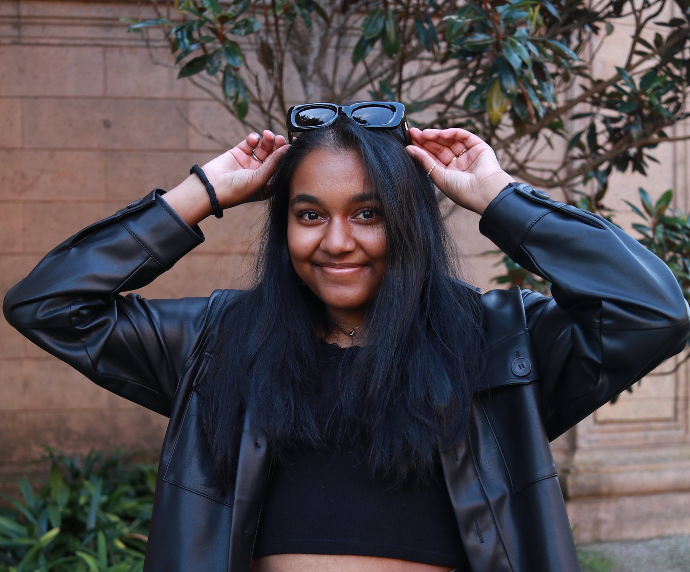

hello!
I'm Muthu.
Hi, I'm Muthu Palaniappan. Nice to meet you!
I'm currently a junior at UCLA studying
Computer Science. I'm a developer and designer.
I use technology in every aspect of my life,
from taking lecture notes on my tablet, to ordering iced coffee on the Philz app,
and to checking my blood glucose levels on my phone.
Seeing how big a role technology has played in my life,
my goal is to create products that stimulate productivity and simplify everyday life.
Here are technologies I work with:
Dev: C++, C, Python, Javascript, HTML5, React.js, Dart, Git, Mercurial, 11ty
Design: CSS, Figma, Photoshop, Indesign, Balsamiq
about me
experience
Google STEP Intern
June 2021 - September 2021
Doing things with Google Fuchsia! More to come soon :)
ACM Design Vice President
Prev: Workshops Director, Developer
December 2019 - Present
UCLA ACM, or the Association for Computing Machinery, is the biggest Computer Science club at UCLA. ACM Design is in charge of mainting the branding for the club, and we also teach students principles of design. I have been VP of Design since March 2021. As the Workshops Director, I organize workshops such as "How to Design a Resume" and "Creating a Brand through Design". As a Developer, I help maintain the ACM Design styleguide website.
UCLA HSSEAS Learning Assistant
January 2021 - June 2021
Classes: Computer Science 31, Computer Science 32
As a part of UCLA's Learning Assistant Program, I was an LA for two introductory CS classes. I attended weekly content meetings with the class professor, prepared Learning Assistant content worksheets, hosted office hours to assist students with homework and projects, and worked with a TA to facilitate weekly discussions with up to 30 students. I also learned about effective teaching strategies through a weekly LA seminar.
Covalent Front-End Developer & Designer
October 2020 - June 2021
Covalent was a UCLA DevX project. We focused on creating a better way to bond! With games like 2 truths and a lie, teams can get to know each other in a virtual setting. As a front-end developer, I worked on various user facing pages using Next.js. As a designer, I was in charge of Covalent's graphics and marketing materials. Check us out on Twitter and on Instagram @covalentapp!
GWC Summer Immersion Student
June 2018 - August 2018
For a summer, I took part in the Girls Who Code Summer Immersion Program. My program was hosted at Lightspeed Ventures in Palo Alto, CA. I was able to learn about programming and Robotics, covering topics such as Python and Web Development every week. Along with my classmates, I also learned about WiSTEM through visiting companies in the Bay Area and listening to women speak about their experiences in tech.